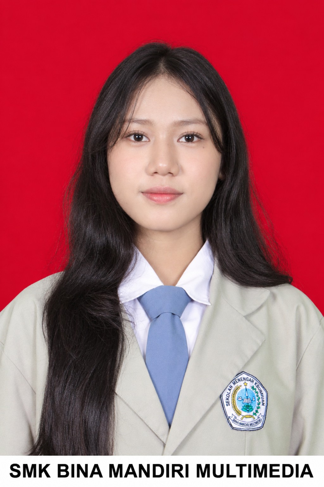

Halo, saya
Rylianicha.
Seorang pelajar yang tertarik pada teknologi, pengembangan website, dan bahasa Jepang. Saya senang belajar hal baru dan mengembangkan keterampilan untuk membuat solusi digital yang rapi dan bermanfaat.

Mengenal lebih dekat.
Profil singkat tentang minat, pembelajaran, dan hal yang ingin terus saya kembangkan.
Saya adalah pelajar yang memiliki ketertarikan pada teknologi dan pengembangan website. Saya mempelajari keterampilan seperti HTML, CSS, PHP, dan MySQL, serta menggunakan Microsoft Office untuk kebutuhan produktivitas. Saya juga tertarik mempelajari bahasa Jepang sebagai bagian dari pengembangan diri.
Perangkat yang saya pelajari.
Keterampilan yang menjadi bagian dari proses belajar dan pengembangan proyek saya.
Hal yang sedang saya bangun.
Dua proyek website yang menjadi bagian dari pengalaman belajar dan penerapan keterampilan saya.
Website Inventaris ATK
Proyek website bertema inventaris alat tulis kantor (ATK). Proyek ini menjadi sarana untuk mempelajari penyusunan antarmuka web dan pengelolaan data inventaris secara terstruktur.
Monitoring Delivery
Proyek website bertema pemantauan delivery atau pengiriman. Fokus proyek adalah menyajikan informasi pengiriman secara terstruktur agar lebih mudah dipantau.
Catatan: ilustrasi proyek di atas merupakan mockup visual. Tambahkan screenshot asli atau tautan demo setelah proyek siap dipublikasikan.
Terus bertumbuh.
Beberapa hal yang ingin terus saya asah melalui latihan dan proyek.
Pengembangan website
Memperdalam HTML, CSS, PHP, dan cara membangun website yang mudah digunakan.
Pengelolaan data
Memahami cara menyusun dan mengelola data menggunakan basis data.
Bahasa Jepang
Belajar secara bertahap untuk menambah kemampuan dan wawasan.
Mari terhubung dan bertukar ide.
Silakan hubungi saya melalui email atau kunjungi profil Instagram saya.